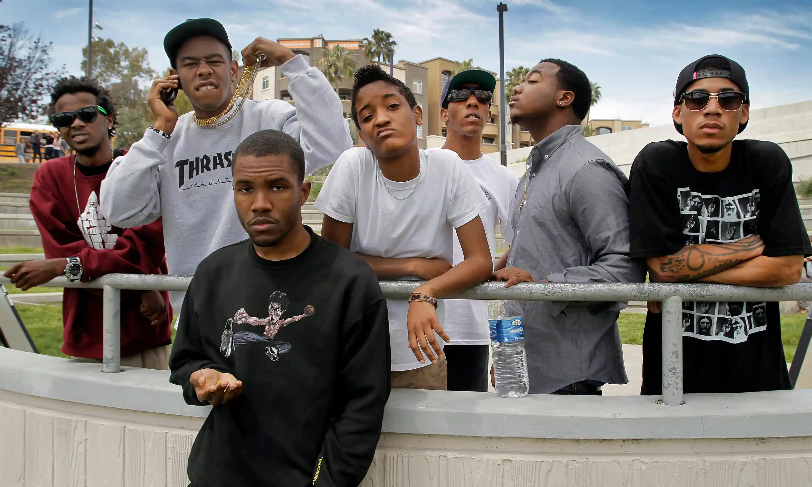
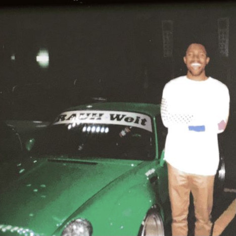
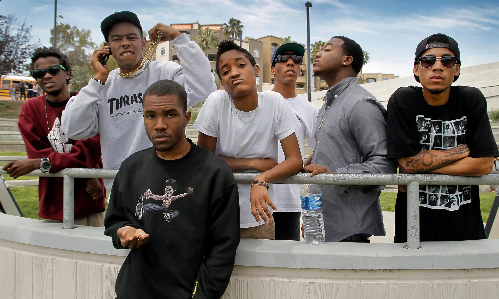
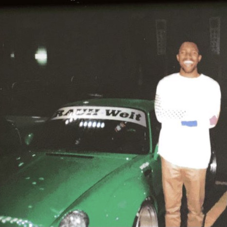
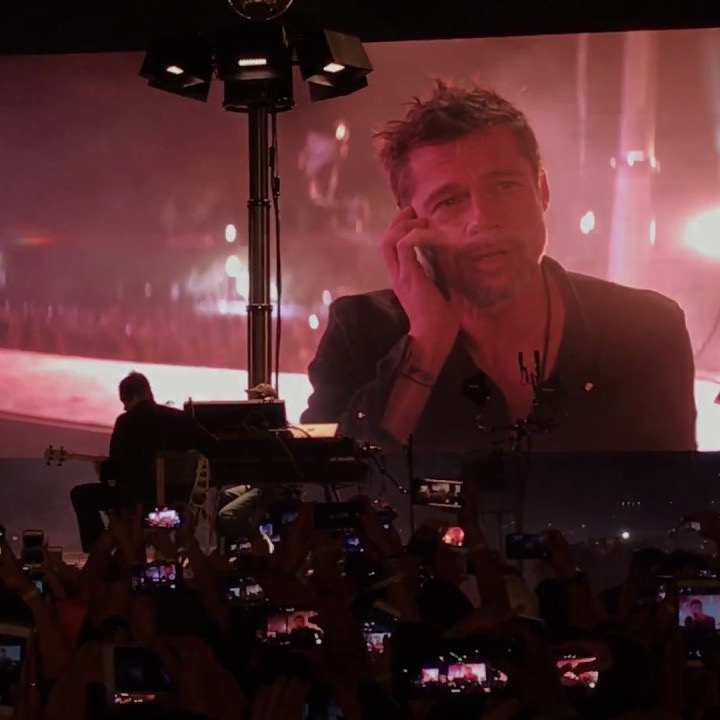
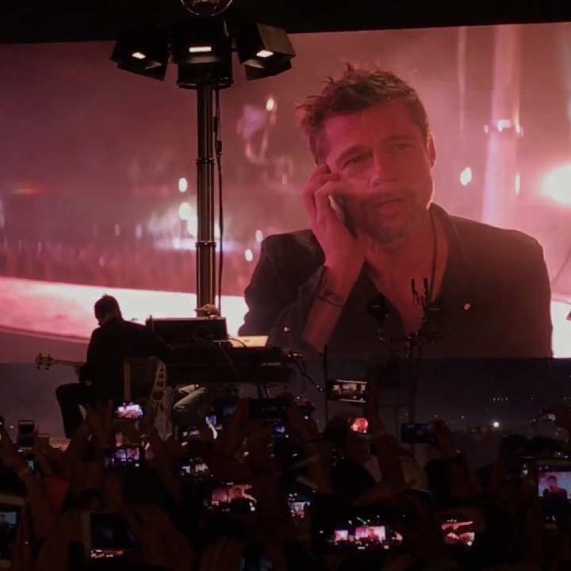

 



FRANK OCEAN was born in New Orleans, Louisiana in 1987. Despite being born into a poor family, he has grown to become one of the most legendary artists of our generation. Although he has only releasing two true albums during his career, he has attracted a massive audience and continues to entice fans with a potential new album.
It all started in 2006, when Ocean moved to Los Angeles to expand his music career as a ghostwriter. He began to write music for massive artists such as Justin Bieber and Beyonce. In 2009 he joined the hip-hop collective Odd Future and became close friends with fellow celebrity artist, Tyler, the Creator. He began to rise in fame, and was signed to Def Jam Records. Although this is a coveted milestone for an artist, Ocean was disappointed in Def Jam's input and began working on his first mixtape, Nostalgia, Ultra, and released it to the public without the label's help.
From there, the rest is history. Frank went on to release his debut album Channel Orange in 2012 to critical acclaim, and followed up with his second album Blond in 2016. In recent years, he has been hidden from the spotlight, most notably due to his brother's tragic death in 2020. Most recently, he has been in the media for the release of his ultra-luxury jewelry brand, Homer. He was pictured at the 2022 Grammy Awards with a stranger green "Homer Baby" and donning some of his creations.